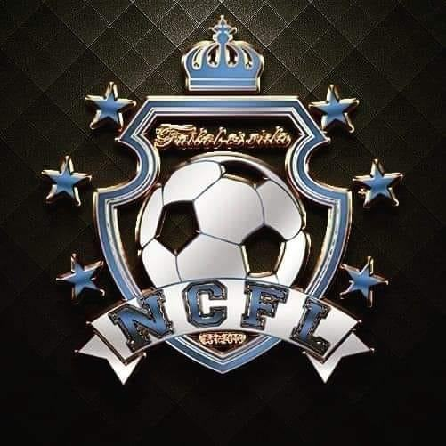

Northern Colorado Futbol League

Purpose:
- NCFL is dedicated to making futbol and futsal tournaments for the community
- NCFL provides Greeley with the oportunity to play futbol year round
- NCFL is an outlet for students and adults alike to express them selves through futbol
How do they do it?
- They rent out city parks in the summer to play outdoor futbol. In the winter, they rent out the Family Funplex
- Teams pay a fee to be able to join the league.
- The teams fight for first place through a 16 game season
- A playoff bracket is made for the best teams in the league. The winner recieves a prize
College Student's personal review:
I have been participant of the NCFL since I was 15 years old. I am 21 now. I can attest to NCFL's commitment to
the sport of futbol. It has never shut down, other than for COVID, in my time playing there. I feel very safe
playing there. It is a lot of fun and has provided something other than school to focus on.
Contact Information